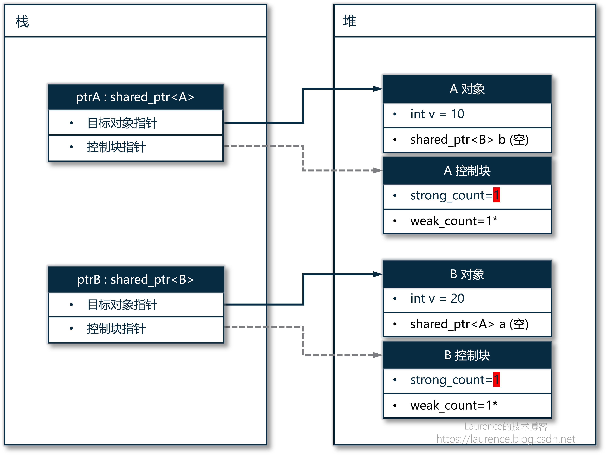
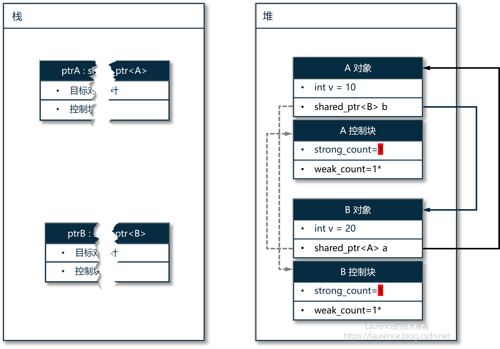
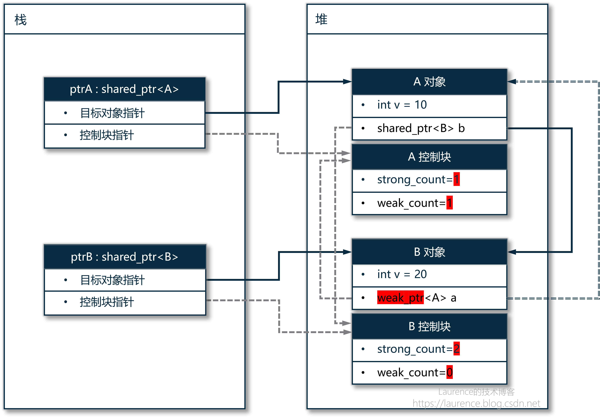
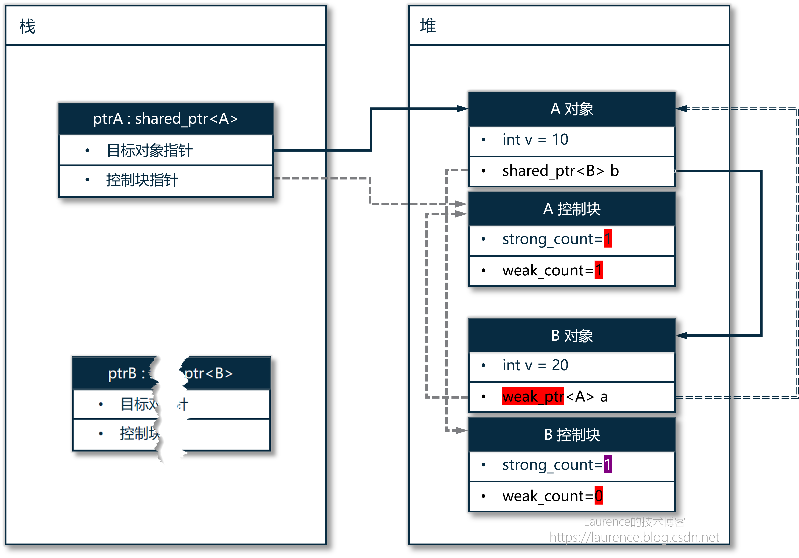
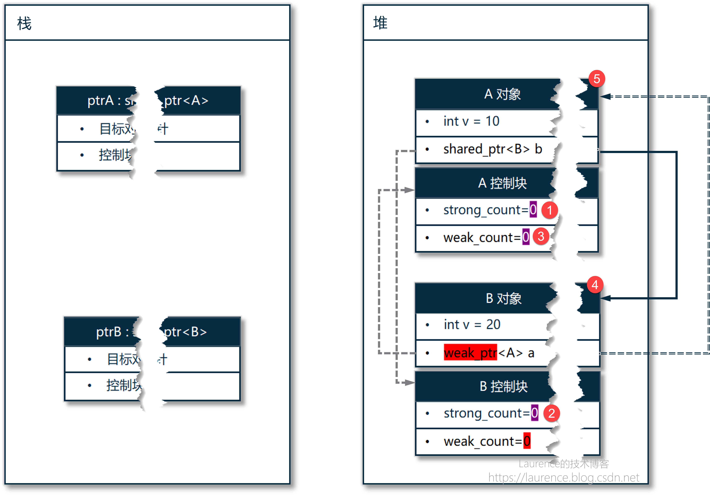

C++ 共享指针“循环依赖”问题深度剖析

C++ 共享指针的循环依赖是一个众所周知的问题，但是很少文章会细致地解释发生循环依赖的原因，以及引入弱指针可以解锁循环依赖的原因。本文会把问题发生和解决的全过程介绍清楚。阅读本文需要对 C++ 的堆、栈运行方式、对象创建与析构有全面和深入的了解，如有需要可先阅读 《编程底层概念回顾：虚拟内存、栈、栈帧、堆》 和 《C++ 对象和嵌套对象的创建与销毁》 两篇文章。
1. 循环依赖是如何发生的?
下图是一个循环依赖发生时的“现场”，它有很强的代表性。但我们现在不会立即解释它。我们先看一段 示例代码 ，然后分析代码中的每一步操作，中途就会遇到下面的状况，我们会在那里详细解释。

下面是将要讲解的示例代码：
1 |
|
我们来细致的分析一下为什么上面的代码会出现“循环依赖”，这个分析过程并不浅显易懂，需要提前储备好堆、栈以及 C++ 对象创建与销毁的知识。在拆解详细步骤前，我们一定要保持头脑情形，有一个大的逻辑框架不可以混淆： 程序将要创建的 A(10) 和 shared_ptr<A> ptrA 是两个“对象”， A(10) 创建在堆上， ptrA 则是创建在栈上的 。 A(10) 是一个普通对象，与智能指针的任何机制无关，也感知不到智能指针的存在，是 shared_ptr<A> ptrA 这个“智能指针对象（实例）”负责维护一个指向 A(10) 的指针，并创建控制块，再维持一个指向控制块的指针。下面是 main 方法的执行细节：
步骤 (1)：执行 shared_ptr<A> ptrA （第36行）
先声明变量 ptrA （不是初始化），在栈上为 ptrA 这个 shared_ptr 对象本身分配 内存 ，大小是 2 个指针：一个指向 A 对象的裸指针，一个指向控制块的裸指针，此时 ptrA 是 “空的”，它内部两个指针均为 nullptr，无任何堆内存关联
步骤 (2)：执行 shared_ptr<B> ptrB （第37行）
继续声明变量 ptrB，动作同上。注意：ptrB 的声明（在栈上分配内存空间）是先于 make_shared<A>(10) 的，因为： C++ 语言规则要求：变量的内存分配（声明）必须先于对它的任何赋值 / 初始化操作
步骤 (3)：执行 ...(10) （第36行）
准备 make_shared<A>(10) 的入参 10 ，在栈上创建一个临时的 int 变量，值为 10，该临时变量会被传递给 make_shared 内部调用的 A 构造函数，构造完成后立即销毁（无副作用）。入参的临时存储是栈上行为，属于 make_shared 调用的前置准备。
步骤 (4)：执行 make_shared<A>(10) （第36行）
make_shared 是一个模板函数，内部完成 “堆内存分配 + 对象构造 + 临时智能指针创建”，有6个子步骤：
-
计算总内存大小
- 计算需要分配的堆内存总大小 =
sizeof(A)（A对象自身：int v + shared_ptr b） +sizeof(ControlBlock)（控制块）。
- 计算需要分配的堆内存总大小 =
-
分配连续堆内存
-
内存位置：堆上；
-
调用
operator new分配一块连续的堆内存（大小=子步骤1的总大小），返回这块内存的起始裸指针。
-
-
构造 A 对象
-
内存位置：堆上（连续内存的前半段）；
-
调用 new（
new (堆内存起始地址) A(10)）：-
将“步骤 3”的临时参数
10传给A的构造函数； -
初始化 A 对象的成员：
v=10，shared_ptr<B> b为空（默认构造）； -
输出 “A 构造函数”（如果构造函数有打印逻辑）。
-
-
-
初始化控制块
-
内存位置：堆上（连续内存的后半段）；
-
在 A 对象内存的后续地址，构造控制块：
-
引用计数
ref_count初始化为 1； -
弱引用计数
weak_ref_count初始化为 0； -
绑定 A 对象的析构器（用于后续释放 A 对象）。
-
-
-
创建临时 shared_ptr
-
内存位置：栈上（make_shared 函数栈帧内）；
-
在
make_shared函数的栈帧内，创建一个临时的shared_ptr<A>对象：-
临时对象的“指向A对象的指针” = 堆上A对象的起始地址；
-
临时对象的“指向控制块的指针” = 堆上控制块的起始地址。
-
-
-
返回临时对象
make_shared函数执行完毕，将临时的shared_ptr<A>对象返回给外层（用于赋值给 ptrA）。
备注：在上述操作中，若共享指针是使用构造函数创建的（ shared_ptr<A> ptrA(new A(10)) )，则控制块的内存分配和初始化工作是在它的构造函数中完成的。
步骤 (5)：执行 ... = ... （第36行）
将 make_shared 返回的临时 shared_ptr<A> 对象赋值给 ptrA（栈上指针拷贝）：
-
make_shared 返回的临时
shared_ptr<A>对象，将其内部的两个指针（指向 A 对象、指向控制块）拷贝到步骤 1 创建的 ptrA 栈内存中； -
拷贝完成后，make_shared 内部的临时
shared_ptr<A>对象析构（但引用计数会先 + 1 再 - 1，最终仍为 1）；
步骤 (6)：执行 shared_ptr<B> ptrB = make_shared<B>(20) （第37行）
重复 步骤 (3) 和 步骤 (4)，得到 ptrB。
※ 当前堆栈分析 ※
在进入循环依赖前，我们看一下堆和栈上的情况以及引用关系：

其中实线箭头是智能指针对目标对象的指向关系，虚线箭头是智能指针对控制块的指向关系
步骤 (7)：执行 ptrA->b = ptrB （第40行）
将 ptrB 赋给 A(10) 对象的成员变量 b ，注意：这里是很容易搞混的地方： b 是 A 对象的成员变量，不是 ptrA 的 ，是 shared_ptr 重写了成员访问运算符 -> 把访问行为“重定向”到它所指的对象上。第二个要注意的地方是这个赋值操作，它使用的不是 编译器 自动生成的赋值运算符，而是 shared_ptr 自己实现的赋值运算符，它除了会复制 shared_ptr 内部两个分别指向目标对象和控制块的成员指针，还有 一个关键性动作：要将 A 控制块中的引用计数 +1 。
步骤 (8)：执行 ptrB->a = ptrA （第41行）
动作内容同上。至此，循环依赖已形成。
※ 当前堆栈分析 ※
我们来看一下现在的堆栈状况：
步骤 (9)：离开 main 函数（第47行）
在 main 函数返回前，会自动销毁栈上的局部变量，也就是 ptrA 和 ptrB ，由于它们是分配在栈上的“对象”，C++ 会保证在销毁时自动调用它们的析构函数， shared_ptr 的析构函数有两项关键操作：
-
先将引用计数 -1，确保一个智能指针的实例被销毁前，引用计数得到相应的更新。
-
再检查 -1 后的引用计数是否已归
0，如果是，表明当前的智能指针实例是最后一个指向目标对象的实例了，这时会调用其目标对象（这里是A(10)) 的析构函数，然后再 delete 掉目标对象，完成目标对象的销毁操作。但这没有在ptrB的析构函数中发生，因为当B(20)对象的引用计数 -1 后从2变成了1，还有A(10)对象中的智能指针b在指向着B(20)对象
同样的事情也会发生在 ptrA 析构时发生，当 A(10) 对象的引用计数 -1 后从 2 变成了 1 ，还有 B(20) 对象中的智能指针 a 在指向着 A(10) 对象**。
※ 当前堆栈分析 ※
在 main 函数返回前，销毁了栈上的 ptrA 和 ptrB 后，当前的堆栈情况如下：

这是 循环依赖发生后的必然结果：内存泄漏 ：A 对象、A 控制块、B 对象、B 控制块都伴随着栈上 ptrA 和 ptrB 的销毁，而再也没有“活”的指针指向它们了，它们在堆上成了“黑户”。循环引用下，A/B 互相持有对方的 shared_ptr，导致引用计数无法降到 0，堆对象析构函数得不到执行，引发内存泄漏。
最后，我们再用简化的语言描述一下循环依赖发生的过程：
-
ptrA销毁 🠚 试图销毁A(10)🠚A(10)被B(20)里面的另一个智能指针指向着 🠚 不能销毁A(10) -
ptrB销毁 🠚 试图销毁B(20)🠚B(20)被A(10)里面的另一个智能指针指向着 🠚 不能销毁B(20) -
ptrA和ptrB没能销毁它们各自指向的对象，但它们自己因离开了作用域被自动销毁，再无指向A(10)和B(20)指针，它们永远地错过了最后一次销毁的机会。
上述表述所说的 不能销毁目标对象是在智能指针运作机制下的“不能”，就是因为“引用计数无法归 0”而导致的“不能”！不是什么物理上的限制，而是在智能指针设计的“逻辑框架”下发生的“逻辑死锁” 。
2. 循环依赖是如何被打破的?
如刚刚所说，我们的问题是“在智能指针的运作机制下”暴露的，也还得是“在智能指针的运作机制下”去解决，既然循环依赖的根本原因是“引用计数无法归 0”，那我们要想的应对措施应该是：在建立 A/B 两个对象通过智能指针相互指向对方的过程中“弱化”其中一方的“所有权”，避免其中一方的引用计数加 +1，这样就不会发生“逻辑死锁”了。这就是弱指针 weak_ptr 的“特性”，我们还是通过例子来解释。我们把前面的循环依赖示例用弱指针改写一下，看看循环依赖是怎么被“打破”的：
1 |
|
第一阶段：建立双向指向关系
在 main 函数执行完 41 行 ptrB->a = ptrA 时，前面发生的事情与第一节描述的步骤 (1) - (6) 基本上是一样的，除了使用 weak_ptr 带来一些差异，基本流程没有大的差别，下面是完成了 A/B 对象通过智能指针相互引用对方后，在栈和堆上状况：

由于我们在 B 对象中使用了弱指针 weak_ptr<A> a 来指向 A 对象，这使用 A 控制块与第一节 发生循环依赖时的状态有明细的“差别”：A 对象当前的强引用只是 1 ，是栈上的 ptrA 在指向它，而 A 对象当前的弱引用也是 1 ，是 B 对象中的 a 在指向它。
第二阶段：销毁其中一个智能指针
然后我们看 main 函数执行完准备返回时的操作，此时需要按变量声明次序的逆序逐一销毁栈上的变量，所以是 ptrB 首先销毁，在它销毁时 C++ 会自动调用它的析构函数，在执行它的析构函数时会 B 控制块的强引用计数 -1，从 2 变成了 1（图中紫色部分）， 此时，由于强引用计数尚未归 0，所以 B 对象还不会被销毁 。

第三阶段：销毁第二个智能指针
销毁完 ptrB 就轮到 ptrA 了，同样地， C++ 会自动调用 ptrA 的析构函数，它的析构函数时会把 A 控制块的强引用计数从 1 减为 0，此时，A 对象的强引用计数已归 0（图中①），它的析构函数会进一步执行 delete 操作，销毁 A 对象，在 delete A 对象时，先执行 A 对象的析构函数，这又会让 C++ 进一步执行其对象成员（嵌套对象） shared_ptr<B> b 的析构函数（ 这里补充一个基础知识：一个堆上的对象如果含有一个对象成员（对象嵌套，非指针），当该对象被析构时，C++ 会保证一并执行对象成员（嵌套对象）的析构函数 ），执行 b 的析构函数就会将 B 控制块的“强引用计数”从上一阶段的 1 减为了 0 ，此时，B 对象的强引用计数也已归 0（图中②），而这就又触发了 B 对象的 delete 操作，在 delete B 对象时，先执行 B 对象的析构函数，这又会让 C++ 进一步执行其对象成员（嵌套对象） weak_ptr<A> a 的析构函数，从而将 A 控制块中的弱引用计数从 1 减为了 0，此时，A 对象的弱引用计数已归 0（图中③），然后， weak_ptr<A> a 的析构完成，返回 🠚 对象 B 析构完成，释放内存，销毁完成（B 控制块也同步销毁），返回（图中 ④） 🠚 shared_ptr<B> b 析构完成 🠚 对象 A 析构完成，释放内存，销毁完成（A 控制块也同步销毁），返回（图中 ⑤）

上述销毁逻辑并不复杂，只是嵌套的层级有一点深，梳理的时候要保持头脑清晰。
C++ 共享指针“循环依赖”问题深度剖析